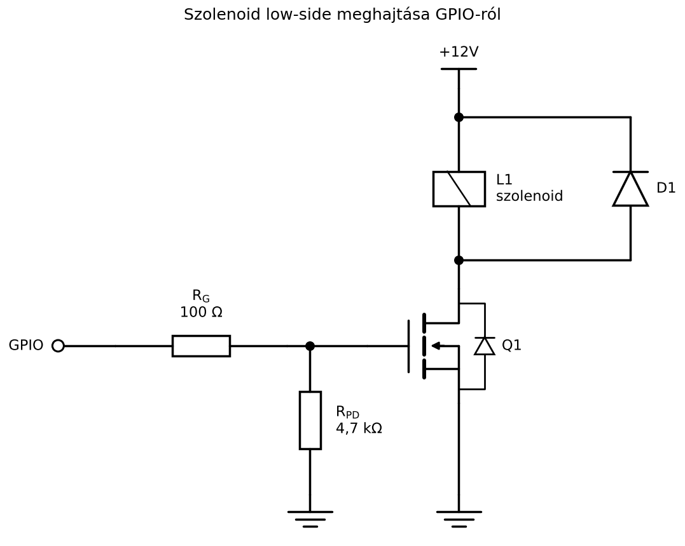
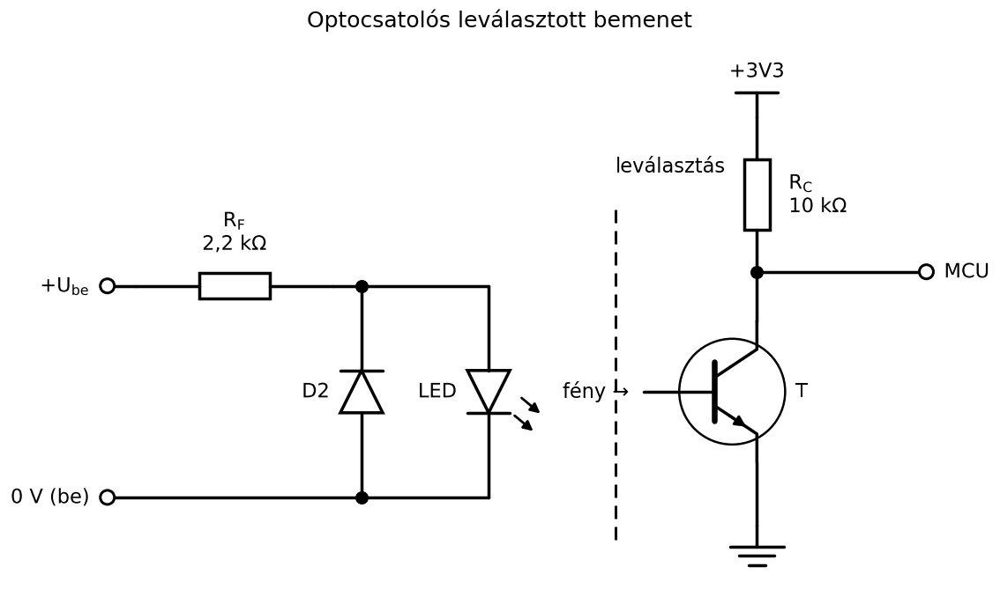

Ebben az alfejezetben megtanulod:
A szenzormodulnak meg kell gyújtania egy állapotjelző LED-et, be kell kapcsolnia egy 12 V-os relét (400 Ω, 30 mA), PWM-mel vezérelnie egy 12 V-os, 1 A-es szolenoidot, és be kell olvasnia egy 12 V-os jelet egy másik berendezésből, amelynek a földje nem feltétlenül azonos a modul földjével. A mikrovezérlőnek ehhez csak GPIO lábai vannak (general purpose input/output, általános célú be-/kimenet): 3,3 V-os jelek, néhány milliamperrel.
Egy GPIO-kimenet gyenge segéd: tud jelezni, de nehéz munkát nem végez. A nagy áramot egy „izom” (tranzisztor, MOSFET, meghajtó IC) kapcsolja, a lábnak csak a vezérlést kell adnia. Ha a két oldal között még villamos kapcsolat sem lehet, a jel fénnyel (optocsatoló) vagy elektromágneses térrel (digitális leválasztó) megy át.
A fát fentről lefelé olvasd. Az alsó doboz minden ágra érvényes ellenőrzés.
Az adatlap több, egymástól független korlátot ad (a számok mintaadatok, a tényleges adatlapfüggő):
| Jellemző | Mintaérték | Mit korlátoz? |
|---|---|---|
| láb forrás- és nyelőárama (ajánlott) | 8 mA | egy láb árama kifelé, illetve befelé |
| port vagy az egész tok összárama | 50 mA | az egyszerre meghajtott lábak összege |
| legalább (8 mA-nél) | 2,9 V | magas szint terhelve |
| legfeljebb (8 mA-nél) | 0,4 V | alacsony szint terhelve |
Forrásáram (source current): a láb kifelé ad áramot, magas szintnél. Nyelőáram (sink current): a láb befelé veszi fel, alacsony szintnél. A terhelt kimenet szintjét a Logikai szintek, családok és kimenettípusok modellje adja: , ahol itt . Az „abszolút határérték” oszlopban nagyobb számok állnak – azok nem üzemi értékek.
Ha a terhelés a 3,3 V-ról működik és az árama kicsi, a láb közvetlenül hajthatja, soros ellenállással (Zener-dióda, LED és fotodióda):
A legrosszabb esetet kétfelé kell nézni: a legnagyobb áramot (nagy tápfeszültség, kis , kis ) a láb korlátjához, a legkisebbet a fényerőhöz. Sok LED együtt a portkorlátot lépheti át. LED-mátrixhoz külön meghajtó IC való. Ha a LED több feszültséget vagy áramot kér (pl. 12 V-os tápról), tranzisztor kapcsolja a föld felől.
BJT esetén a bázisellenállás a túlvezérlésből adódik (A BJT mint kapcsoló):
MOSFET esetén (MOSFET kapcsolóként: low-side és high-side) a gate-nek feszültség kell; a tervezés a garantált -ra épül a rendelkezésre álló -nél (a szenzormodul MN1-ének 2,5 V-os garantált értéke 50 mΩ). A nem a bekapcsolás határa.

Induktív terhelés áramát kikapcsoláskor valahova vezetni kell, különben a MOSFET drain-feszültsége a letörésig ugrik – ezért a szabadonfutó dióda (D1) vagy más befogás kötelező (Biztonságos működési tartomány, lavina és induktív terhelés). A gate töltéséhez a láb rövid áramimpulzust ad: , itt 22–33 mA néhány tíz-száz ns-ig. Ha az adatlap ezt nem engedi, nagyobb kell (lassabb kapcsolás, több kapcsolási veszteség, Kapcsolási folyamat: gate-töltés, Miller-plató és meghajtás).
Kész meghajtók. Védett low-side kapcsoló IC-k (áramkorlát, hővédelem, beépített befogás), high-side kapcsolók (ha a terhelés egyik vége földön marad), Darlington-tranzisztortömbök (ULN2003-típus, nagyobb, 1 V körüli maradékfeszültséggel, adatlapfüggő) és H-híd IC-k (a motor forgásirányának váltásához).
A mikrovezérlő reset alatt és a program indulása előtt a lábakat jellemzően bemenetként, nagy impedanciásan hagyja. A MOSFET gate-je ekkor lebeg: a szivárgás és a zaj bekapcsolhatja. Ezért kell a gate–source lehúzó ellenállás. A szenzormodul 100 kΩ-os lehúzója 1 µA szivárgásnál 0,1 V-ot enged meg, ami jóval a küszöb minimuma (0,6 V) alatt van. De sok mikrovezérlő reset alatt belső felhúzót kapcsol be (adatlapfüggő)! Ekkor osztó alakul ki, és a feltétel:
Szavakkal: a belső felhúzó és a lehúzó osztója nem emelheti a gate-et a küszöb fölé.
Továbbvitt eredmény. A meghajtást végrehajtó MOSFET gate-jére mindig kell lehúzó, amelynek értéke a reset alatti állapotból (lebegő vagy belső felhúzós láb) következik. Ezt a Tervezési átvizsgálás és átadás a NYÁK-tervezésnek és a 3. záróprojekt: MOSFET-es meghajtó induktív terheléshez használja.
Továbbvitt eredmény. A meghajtóválasztás döntési fája: leválasztás → közvetlen → low-side (BJT/MOSFET) → kész meghajtó IC; minden ágon induktív befogás, reset-állapot és legrosszabb eset. Ezt a Követelményektől a blokkdiagramig és a 3. záróprojekt: MOSFET-es meghajtó induktív terheléshez használja.
Definíció. Két áramkör galvanikusan leválasztott, ha nincs köztük vezető (egyenáramú) út – a földjeik sem közösek.
Miért kellhet? Eltérő földpotenciál (hosszú kábel, motoros berendezés), zajos tápkör, nagy vagy veszélyes feszültség, biztonsági követelmény. A szigetelési távolságokat a Szigetelési távolság és kúszóút tárgyalja; a konkrét feszültségtűrés az adatlapból jön (ellenőrizendő: az adott alkatrész adatlapja és az alkalmazandó szabvány).
Az optocsatoló egy tokban egy LED és egy fényérzékeny tranzisztor (fototranzisztor), köztük szigetelés. Az átvitt jel a fény; a két oldalnak saját földje van. A fototranzisztor bázisát a fény „vezérli”, ezért a rajzjel bázisvonala nincs bekötve.

Definíció. Az áramátviteli tényező (current transfer ratio, CTR) a fototranzisztor kollektoráramának és a LED áramának hányadosa: .
A CTR nagyon szór (egy típuson belül is többszörös), hőmérséklet- és áramfüggő, és a LED öregedésével csökken. Ezért a garantált minimumot egy tartaléktényezővel szorozzuk (mintaadat: , tartalék 0,5, azaz ). A kimenet biztosan lehúz (a tranzisztor telítésben van), ha az elérhető áram nagyobb a szükségesnél:
ahol a legkisebb bemenő feszültséghez, legnagyobb -hez és -hez tartozik. Kikapcsolt LED-nél a kimenetet húzza fel; itt a melegen megnövő sötétáram csökkenti a magas szintet.
Sebesség. A telített fototranzisztor lassan kapcsol ki, a kimenet felfutását is lassítja. Mintamodellünk: , nF (feltételezett), a felfutás . Nagy : kis áramigény, de lassú; kis : gyorsabb, de több fény kell.
Digitális leválasztó (kapacitív vagy mágneses elven): gyors, nincs CTR-öregedés, de mindkét oldalon tápfeszültség kell. A LED-es megoldás passzív bemenetként marad vonzó lassú, ipari jelekhez.
Továbbvitt eredmény. Az optocsatolós leválasztást a feltétellel, a LED-ellenállás legnagyobb disszipációjával és a külön földekkel tervezzük. Ezt a Szigetelési távolság és kúszóút és a 2. záróprojekt: érzékelő-illesztő és mérőlánc használja.
A firmware-oldal (GPIO-regiszterek, felhúzó beállítása, PWM) az IoT-rendszerek (books/dsk-iot-systems) és az ARM assembly (books/dsk-arm-assembly) könyvek GPIO-fejezeteiben folytatódik.
A) Állapotjelző LED ( Ω, V mintaadat). Névlegesen mA, az 50 Ω-os kimeneti ellenállással mA. Legnagyobb esetben (3,465 V, V, −5%) 6,5 mA, 8 mA alatt; a legkisebb (3,135 V, 2,2 V, +5%) 3,3 mA. Nyolc ilyen LED mA, a portkorláton belül; tizenkettő 58 mA – már nem.
B) Relé BJT-vel (30 mA, , ): mA; kΩ → 2,2 kΩ. A relé tárolt energiája µJ, ezt a dióda vezeti el.
C) Szolenoid MOSFET-tel (1 A). Lehúzó, ha reset alatt a belső felhúzó kΩ: kΩ → 4,7 kΩ (100 kΩ-mal a gate 2,64 V-on lenne, a MOSFET bekapcsolna). Vezérléskor a gate: V 2,5 V, tehát a garantált 50 mΩ érvényes. Vezetési veszteség 25 °C-on mW; meleg tranzisztorral és 20 kHz-es kapcsolási veszteséggel a modell 126 mW-ot ad, °C 60 °C-os környezetben.
D) Optocsatoló (9…16 V, = 1,0…1,4 V mintaadat, kΩ 1%, kΩ 1%):
from elkit import devices as dv, power as pw, extra_elch16 as x, units
led = dv.led_design(3.3, u_supply_tol=0.05, u_f_range=(1.8, 2.2))
print(f"LED: R = {led.r:.0f} Ω, I = {units.fmt(led.i_min, 'A')} ... "
f"{units.fmt(led.i_max, 'A')}; 8 db: {units.fmt(8 * led.i_nom, 'A')}")
q = dv.bjt_switch(2.9, 30e-3, beta_min=100, overdrive=3, series="E24")
print(f"relé: R_B <= {units.fmt(q.r_b_max, 'Ω')}, választás {units.fmt(q.r_b, 'Ω')}")
for r_pd in (100e3, 4.7e3):
u_g = 3.3 * r_pd / (x.R_PU_BELSO_MIN + r_pd)
print(f"reset, R_PD = {units.fmt(r_pd, 'Ω'):6s}: U_G = {u_g:.2f} V")
sw = pw.size_low_side_switch(dv.MN1, u_gpio=2.84, i_load=1.0, f=20e3, duty=1.0)
print(f"MOSFET: rendben={sw.ok}, P = {units.fmt(sw.p_mosfet, 'W')}, T_J = {sw.t_j:.0f} °C")
i_min = x.opto_led_current(9.0, x.R_F_OPTO * 1.01, x.U_F_OPTO[2])
i_kell = (3.465 - x.U_CE_SAT) / (x.R_C_OPTO * 0.99)
i_van = x.CTR_MIN * x.CTR_OREGEDES * i_min
print(f"opto: I_F,min = {units.fmt(i_min, 'A')}, elérhető {units.fmt(i_van, 'A')}, "
f"szükséges {units.fmt(i_kell, 'A')}, tartalék {i_van / i_kell:.1f}x")LED: R = 270 Ω, I = 3.3 mA ... 6.49 mA; 8 db: 38.5 mA
relé: R_B <= 2.39 kΩ, választás 2.2 kΩ
reset, R_PD = 100 kΩ: U_G = 2.64 V
reset, R_PD = 4.7 kΩ: U_G = 0.52 V
MOSFET: rendben=True, P = 126 mW, T_J = 76 °C
opto: I_F,min = 3.42 mA, elérhető 855 µA, szükséges 320 µA, tartalék 2.7xA jobb oldali ábrán a 10 kΩ-os felhúzóhoz az elérhető áram már 4 V körül elég; a 2,2 kΩ-oshoz a teljes üzemi tartomány alsó része kevés.
A GPIO néhány mA-es segéd: a láb- és portáramot, valamint a terhelt / szintet az adatlap korlátozza. A meghajtó döntési sorrendje: leválasztás, közvetlen meghajtás, low-side BJT vagy logikai szintű MOSFET, kész meghajtó IC. Induktív terheléshez befogás kell. A gate-re lehúzó kerül, értékét a reset-állapot szabja meg: . Az optocsatoló galvanikusan leválaszt; a tervezés feltétele , a LED-ellenállás disszipációja, a sebesség (nagy lassít) és a külön föld.
1. ; 390 Ω-mal mA (360 Ω-mal 3,1 mA); mindkettő jó.
2. Névlegesen mA: éppen belül. Legnagyobb esetben mA: kívül. Nagyobb ellenállás vagy meghajtó kell.
3. mA, ez jóval több 8 mA-nél. Logikai szintű n-MOSFET (low-side), szabadonfutó diódával, a motor indítási áramát is figyelembe véve.
4. kΩ; például 10 kΩ ( V).
5.
for r_c in (2.2e3, 4.7e3, 10e3, 22e3, 47e3):
kell = (3.465 - x.U_CE_SAT) / (r_c * 0.99)
t = 2.2 * r_c * x.C_EQ_OPTO
print(f"R_C = {units.fmt(r_c, 'Ω'):7s} tartalék {i_van / kell:5.2f}x "
f"t = {units.fmt(t, 's')}")R_C = 2.2 kΩ tartalék 0.59x t = 4.84 µs
R_C = 4.7 kΩ tartalék 1.26x t = 10.3 µs
R_C = 10 kΩ tartalék 2.67x t = 22 µs
R_C = 22 kΩ tartalék 5.88x t = 48.4 µs
R_C = 47 kΩ tartalék 12.57x t = 103 µsA legalább kétszeres tartalékot adó leggyorsabb választás a 10 kΩ; 4,7 kΩ-nál a tartalék 1,3-szoros.
6. A legkisebb LED-áram mA; az elérhető mA a szükséges 0,32 mA-rel szemben 1,7-szeres, megfelel. A legnagyobb: mA (a LED adatlapja szerint ellenőrizendő); disszipációja mW, 1206-os tok. A LED legkorábban kb. V-nál kezd vezetni, tehát a néhány voltos zaj nem billenti a bemenetet.